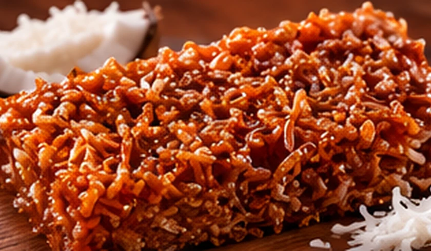
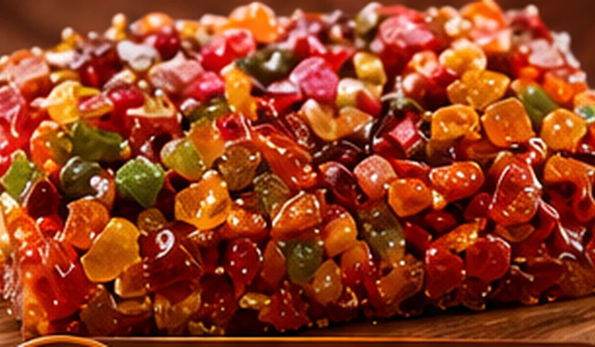
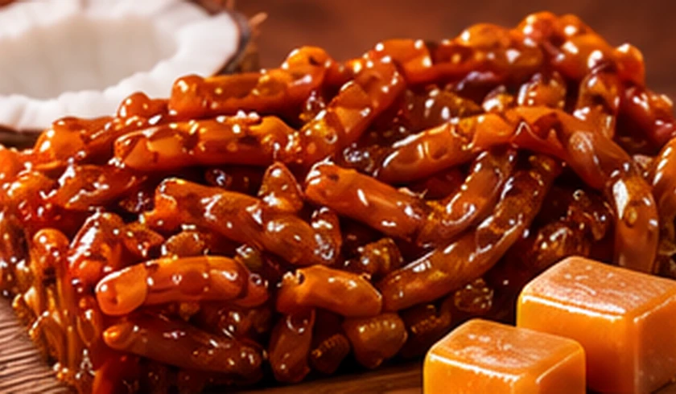
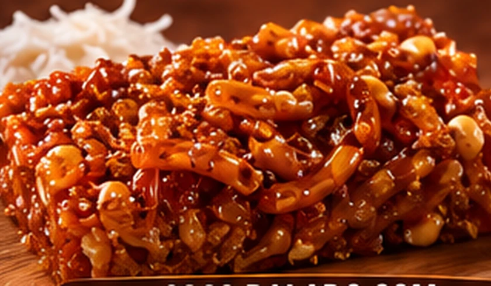
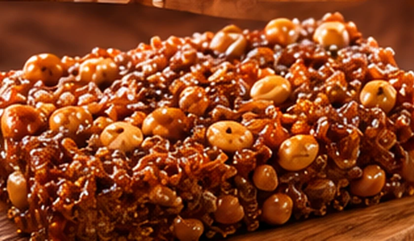
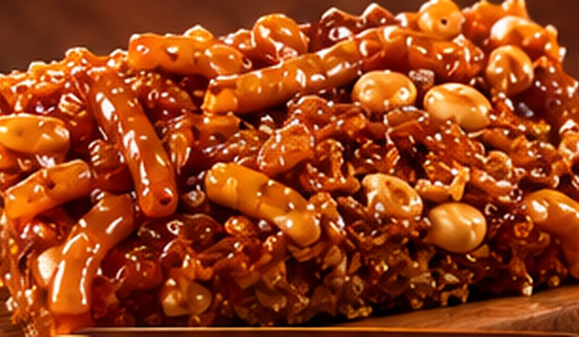
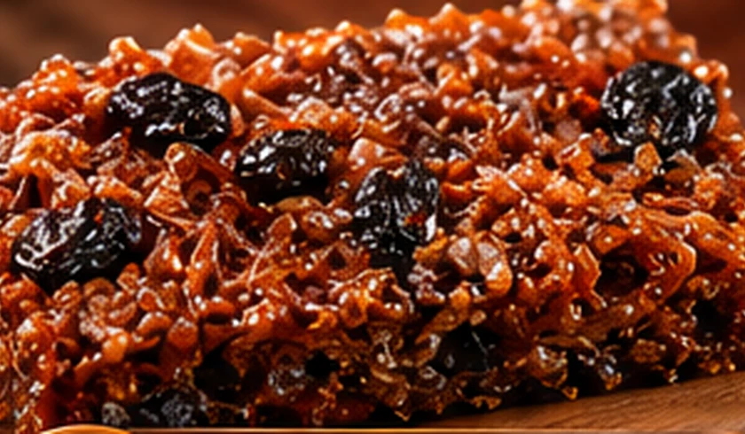
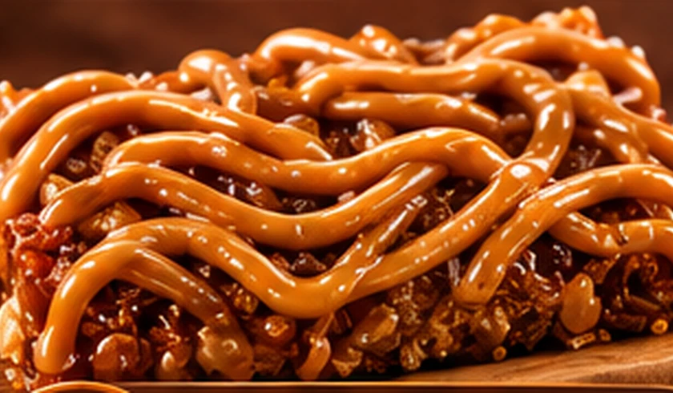

01 / 08
Coco Ralado
Coco ralado fresquinho e cheio de sabor.
Quebra-queixo artesanal, crocante e cheio de sabor. O doce tradicional que ganha novas combinações na Arco Doces.


Um clássico da nossa cultura, perfeito para aquela pausa doce ou para compartilhar com quem você gosta.
Dos sabores tradicionais às combinações com amendoim, frutas e doce de leite.
Cada pedaço tem seu charme. Explore os sabores e adicione ao seu pedido.
Coco ralado fresquinho e cheio de sabor.

02 / 08Coco dourado e caramelizado, um clássico!

03 / 08Coco ralado, amendoim crocante e coco caramelizado.

04 / 08Coco ralado com amendoim torrado, irresistível!

05 / 08Coco com amendoim e caramelizado, cortadinho para aproveitar.

06 / 08Coco com uva-passas, um toque especial de doçura.
Coco com frutas cristalizadas, colorido e delicioso!

08 / 08Coco com doce de leite, combinação perfeita!
✳ Imagens ilustrativas. Preços, quantidades e disponibilidade são confirmados pelo WhatsApp.
A Arco Doces celebra um dos sabores mais queridos da nossa tradição: o quebra-queixo. Aqui, o clássico ganha espaço para novas combinações e muita vontade de compartilhar.
Conheça a variedade de sabores e entre em contato para escolher os seus favoritos.
Acompanhar no InstagramNavegue pelo cardápio e encontre seus preferidos.
Adicione as quantidades que deseja no carrinho.
Converse sobre valores, disponibilidade e entrega.
Fale com a Arco Doces e escolha seus sabores favoritos.